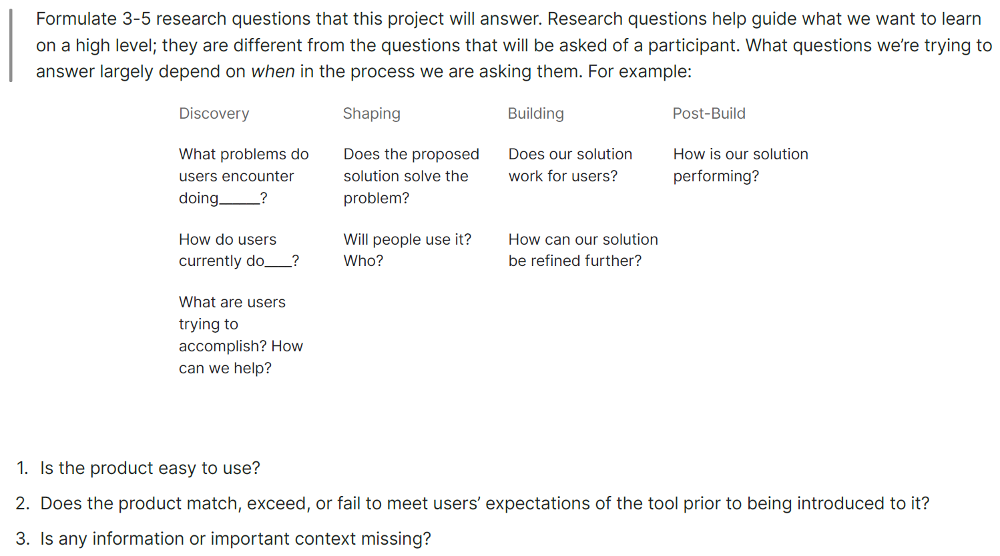

Exploration, Testing, Iteration
Setting Up the Scaffold
Because this project had a 6-week window of completion, with expected post-launch updates and other technical limitations to consider, some of the features and feedback we wanted to implement immediately would need to be delayed. As such, I explored potential solutions without a map view. Priorities for initial launch included:
Updated search parameters
- by ZIP
- distance (10-mi radius default)
- dentist first & last name
- office/practice name
- specialties
Updated search results
- practice/office name
- dentist(s) at practice
- accepted network(s)
- specialties
- sort by closest to farthest
- pagination (no infinite scrolling)
The new digital real estate taken by the map would instead be used to communicate the value for site visitors and members going to an in-network dental office vs an out-of-network office, in an effort to close the 40% OON claims and resulting $4.6 million in additional costs to the business.

(1/4) Fat marker sketches

(2/4) Mid-fidelity wireframes (used for internal usability tests)

(3/4) high-fidelity screens - round 1 (used for external usability tests)

(4/4) high-fidelity screens - round 2 (used for internal + external usability tests)
Note: with a co-designer and senior design guidance, we explored potential solutions as a team through sketching and whiteboarding, then diverged to flesh out the desktop and mobile experiences. I worked primarily on mobile.
After creating a simple but satisfactory first iteration, we reconvened the drafted a research test plan for getting feedback and iterating on designs. We first tested internally, revised based on feedback, then updated design fidelity and tested externally, refined again, and re-tested one more time for both desktop and mobile experiences.
The essence of our research plan for usability testing.